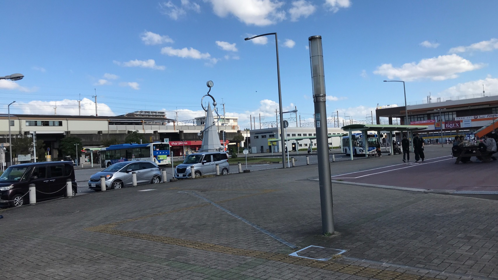

香澄公園 近辺
ミスターマックス

[営]10：00-21：00
・日9：30-21：00
・住所：〒275-0024
千葉県習志野市茜浜2-2-1
新習志野駅から徒歩２分
・電話番号：047-408-1160
レビュー 便利な商品がとても安く買えます！ 品ぞろえもよく隣にはベルクスもあります！ 駅が近くてほんとに便利！
公式サイトURLこちらから
谷津バラ園 近辺
Cafe 螢明舎
[営]10：00-22：00
・定休日：年中無休
・住所：〒275-0024
千葉県習志野市谷津4-6-34
谷津駅から徒歩２分
・電話番号：047-451-1669
レビュー 外層から商店街の中から異色の雰囲気があり魅力的に感じた。 中は洋風で、メニューも豊富で楽しめました。
公式サイトURLこちらから
金のうさぎ
[営]平日10：00-22：00
・ 土日10:00-20：00
・住所：〒275-0026
千葉県習志野市谷津4-6-28
京成谷津駅から徒歩１分-
・電話番号：047-454-1102
レビュー 商店街の中にひっそりあるお店です。ウサギの形の商品など、ウサギのグッズがありました。
公式サイトURLこちらから
ラウンドワン習志野 近辺
コナズ珈琲 幕張店
[営]平日10：00-22：00
・ 土日9:00-20：00
・住所：〒275-0023
千葉県習志野市芝園1-2-2
新習志野駅（南口）から徒歩９分
・電話番号：047-408-2763
レビュー 雰囲気と店員の対応がすごくよかった。 ボリュームもあり食べ応えがあった。
公式サイトURLこちらから
千葉工業大学 新習志野キャンパス(食堂)
[営]10：30-20：00
・〒：275-0023
千葉県習志野市芝園2-1-1
新習志野駅から徒歩10分
・電話番号：047-454-9754
レビュー 安い！早い！うまい！この３点に限る！
公式サイトURLこちらから
レジェンドスポーツヒーローズ 近辺
スターバックス＿グランドモール
[営]平日10：00-21：00
・住所：〒275-0023
千葉県千葉市美浜区豊砂1-1 イオンモール グランドモール
海浜幕張駅から徒歩１３分
・電話番号：047-213-3206
レビュー 本屋の横にあり、落ち着いた雰囲気でした。期間限定の商品などがあり色々な品ぞろえがあった。
公式サイトURLこちらから
アンデルセン公園 近辺
牧場のアイス屋さん
[営]平日9：30-16：00
・定休日：月曜日
・住所：〒247-0054
千葉県船橋市金堀町５２５番 アンデルセン公園内
白井駅から徒歩３０分
・電話番号：047-457-6627
レビュー ここでしか食べられないようなミルクジェラートやミルク餅などの珍しいものが多くて味もおいしい。
公式サイトURLこちらから
ヒルデモア
[営]平日9：30-16：00
・定休日：月曜日
・住所：〒247-0054
千葉県船橋市金堀町５２５番 アンデルセン公園内
・白井駅から徒歩３０分
・電話番号：047-457-6627
レビュー 周りが草原みたいで景色がよく、食べ物も安くておいしく食べれることができ、ランチするには最高だった。
公式サイトURLこちらから
STUDIO PARIMO 近辺
kawara CAFE&DINING
[営]11：00-22：00
・住所：〒274-0825
千葉県船橋市前原西２－１８－１ 津田沼PARCO店 A館 ６F
津田沼駅から徒歩５分
・電話番号：047-479-5810
レビュー 席は1人でも2人掛けソファーに案内してもらい、ゆったり快適でした。 デザートのトッピングが美味しいです。
公式サイトURLこちらから（食べログ）
リンツ ショコラカフェ


[営]10：00-21：00
・住所：〒274-0825
千葉県船橋市前原西２－１８－１ 津田沼PARCO店 A館 １F
津田沼駅から徒歩５分
・電話番号：047-409-4375
レビュー アウトレットなので、かなりお買い得なものが置いてあることも。 値段は高めですが、とてもレアです。
公式サイトURLこちらから